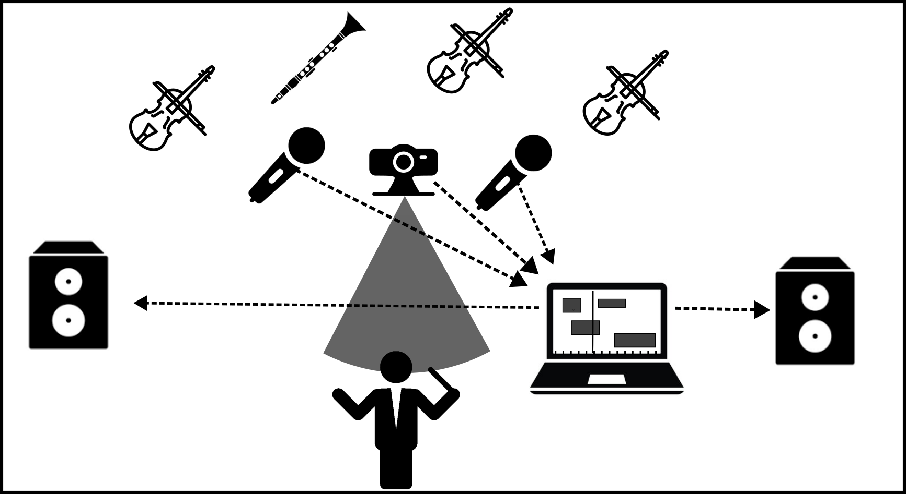

Ponticello is a composition environment for electronic music based on the audio programming language SuperCollider.
SuperCollider's code-based approach offers a uniquely versatile and concise way of working with sound.
It allows complex structures to be described with just a few lines,
and it invites ways of thinking about music that differ completely from traditional notation.
But code as a compositional medium also has its drawbacks and limitations.
Reading through a text file does not give an immediate sense of how musical events relate to one another in time.
A graphical score can offer that immediacy:
When time flows left to right, and simultaneous events share the same horizontal position,
musical relationships become easier to see at a glance.
What is needed is a tool that allows direct interaction with a graphical score,
while still offering the full possibilities of SuperCollider's approach to sound synthesis and musical organization.
Ponticello is an attempt to build such a bridge:
linking the versatility of code as a compositional medium with the intuitiveness of graphical scores,
while drawing on concepts from both notational paradigms.
Synchronization in mixed acoustic-electronic music
In addition to functioning as a composition environment,
Ponticello also explores new ways of coordinating electronic processes with live performers.
Ponticello supports mixed acoustic-electronic music performances
in which electronic playback follows a human conductor.
Instead of synchronizing electronics using fixed digital click tracks,
the system allows the computer to adapt its timing to the conductor's flexible pulse.

During performance, the conductor is captured by a video camera,
and the inferred tempo is used to continuously control the playback speed of the electronic score.
As a result, electronic processes can stretch and compress in time together with the ensemble,
responding naturally to rubato, accelerandi, and ritardandi.
This allows electronic playback to maintain tight coordination with the ensemble
while preserving the performers' freedom to shape musical time expressively.
I present this approach in a paper currently under review for the International Computer Music Conference (ICMC 2026).
Installation
Ponticello uses the SuperCollider platform for audio synthesis.
It can be downloaded here.
Ponticello can be installed by executing one of the following code snippets in the shell, depending on your operating system.
(An appropriate Java Runtime Environment and the JavaFX SDK are both automatically downloaded if you don't have them installed on your system.)